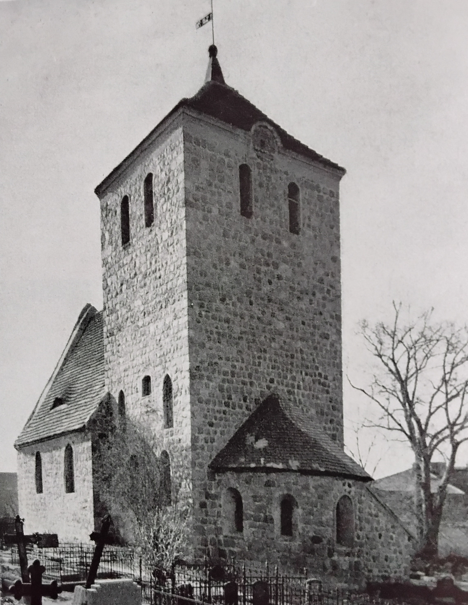

The Church in Grünow near Schwedt

The village church in Grünow near Schwedt/Oder is a remarkable testimony to medieval architecture in the Uckermark. It stands in today's Schwedt district of Grünow and was probably built around the middle of the 13th century. The building consists largely of carefully worked fieldstones and belongs to the Protestant church.
The unusual design of the church is particularly striking. As in many village churches, the tower is not located on the west side, but above the choir on the east side. For this reason Grünow was formerly also called “Verkehrt-Grünow” (Reversed Grünow). The unusual choir tower with apse makes the church an architectural peculiarity, as choir-tower churches of this kind are rare in the region.
The church has a short nave, a recessed and vaulted choir as well as a semicircular apse. Inside, the different forms of vaulting stand out. The triumphal arch between the nave and the choir is decorated with representations of the evangelist symbols. The interior furnishings of the church are also of historical interest. Particularly noteworthy is the wooden pulpit dating from around 1700. In addition, two bells hang in the church tower, including one from the 15th century and another cast in 1615 by the Stettin bell founder Rolof Klassen.
Over the course of the centuries, the church was modified and restored several times. Today the church is an important architectural monument of the village and recalls Grünow's long history. It stands in the middle of the historic village core and, together with the manor house and the surrounding village, forms a distinctive ensemble. The city of Schwedt lists the church as a listed building.
The village church in Grünow is thus far more than a house of worship. Its medieval fieldstone architecture, the unusual choir tower and the preserved historic furnishings make it a remarkable cultural monument of the Uckermark. It tells of the history of the village and of a time when churches were not only religious but also important social centres of rural life.